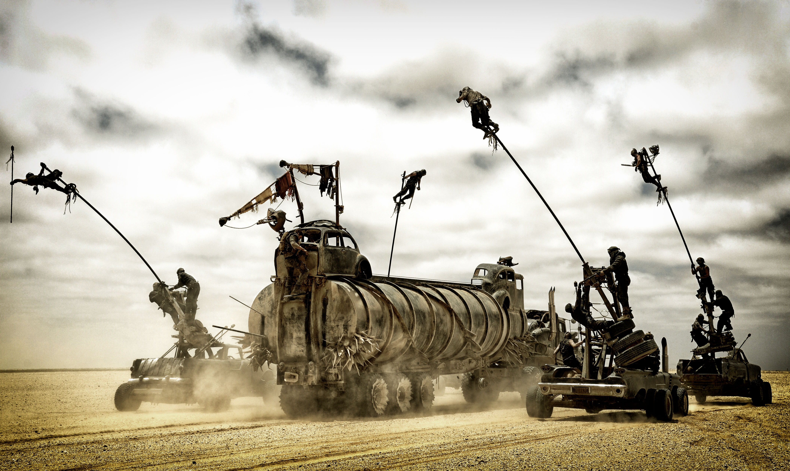

×
Blade Runnner 2049

Blade Runner 2049
Blade Runner 2049 is a 2017 American science fiction film directed by Denis Villeneuve and written by Hampton Fancher and Michael Green. A sequel to the 1982 film Blade Runner, the film stars Ryan Gosling and Harrison Ford, with Ana de Armas, Sylvia Hoeks, Robin Wright, Mackenzie Davis, Carla Juri, Lennie James, Dave Bautista, and Jared Leto in supporting roles. Set thirty years after the first film, Gosling plays K, a blade runner who uncovers a secret that threatens to instigate a war between humans and replicants.
Principal photography took place between July and November 2016, mainly in Budapest, Hungary. Blade Runner 2049 premiered in Los Angeles on October 3, 2017 and was released in the United States in 2D, 3D and IMAX on October 6, 2017. The film was praised by critics for its performances, direction, cinematography, musical score, production design, and faithfulness to the original film. Despite positive reviews, the film was a box office disappointment, grossing just $92 million in North America and $259 million worldwide.[10][11][6]
Blade Runner 2049 received five nominations at the 90th Academy Awards, including Best Production Design, Best Visual Effects and Best Cinematography. It received eight nominations at the 71st British Academy Film Awards, including Best Director, Best Cinematography, Best Production Design and Best Special Visual Effects.
×
Mad Max Fury Road

Mad Max Fury Road
Mad Max: Fury Road is a 2015 action film co-written, co-produced and directed by George Miller. Miller collaborated with Brendan McCarthy and Nico Lathouris on the screenplay. The fourth installment and a reboot[7] of the Mad Max franchise, it is a joint Australian-American[8] venture produced by Kennedy Miller Mitchell, RatPac-Dune Entertainment and Village Roadshow Pictures. The film is set in a post apocalyptic desert wasteland where gasoline and water are scarce commodities. It follows Max Rockatansky (Tom Hardy), who joins forces with Imperator Furiosa (Charlize Theron) to flee from cult leader Immortan Joe (Hugh Keays-Byrne) and his army in an armoured tanker truck, which leads to a lengthy road battle. The film also features Nicholas Hoult, Rosie Huntington-Whiteley, Riley Keough, Zoë Kravitz, Abbey Lee, and Courtney Eaton.
Fury Road was in development hell for many years, with pre-production starting as early as 1997. Attempts were made to shoot the film in 2001 and 2003, but were delayed due to the September 11 attacks and the Iraq War. In 2007, after focusing on Happy Feet, Miller decided to pursue producing the film again. He briefly considered producing it as a computer-animated film but abandoned it in favor of live-action. In 2009, Miller announced that filming would begin in early 2011. Hardy was cast as Max in June 2010, with production planned to begin that November. Principal photography was delayed several more times before beginning in July 2012. The film wrapped in December 2012, although additional film footage was shot in November 2013.
The film had its world premiere on 7 May 2015 at the TCL Chinese Theatre. It began a worldwide theatrical release on 14 May 2015, including an out-of-competition screening at the 68th Cannes Film Festival, in 2D, 3D, IMAX 3D and 4DX. It has grossed over $378 million worldwide, making it the highest-grossing film in the Mad Max franchise. The film was ranked by many critics as the best film of 2015, and is considered one of the greatest action films ever made;[9] acclaim went to its direction, screenplay, action sequences, and ensemble cast. Fury Road won multiple critical and guild awards, and received ten Academy Award nominations including Best Picture and Best Director for George Miller. It won six: Costume Design, Production Design, Makeup and Hairstyling, Film Editing, Sound Editing and Sound Mixing.
×
The Dark Knight

The Dark Knight
The Dark Knight is a 2008 superhero film directed, produced, and co-written by Christopher Nolan. Featuring the DC Comics character Batman, the film is the second part of Nolan's The Dark Knight Trilogy and a sequel to 2005's Batman Begins, starring an ensemble cast including Christian Bale, Michael Caine, Heath Ledger, Gary Oldman, Aaron Eckhart, Maggie Gyllenhaal and Morgan Freeman. In the film, Bruce Wayne/Batman (Bale), Police Lieutenant James Gordon (Oldman) and District Attorney Harvey Dent (Eckhart) form an alliance to dismantle organized crime in Gotham City, but are menaced by a criminal mastermind known as the Joker (Ledger) who seeks to undermine Batman's influence and create chaos.
Nolan's inspiration for the film was the Joker's comic book debut in 1940, the 1988 graphic novel The Killing Joke, and the 1996 series The Long Halloween, which retold Two-Face's origin. The "Dark Knight" nickname was first applied to Batman in Batman #1 (1940), in a story written by Bill Finger.[4][5] The Dark Knight was filmed primarily in Chicago, as well as in several other locations in the United States, the United Kingdom, and Hong Kong. Nolan used IMAX 70 mm film cameras to film some sequences, including the Joker's first appearance in the film. Warner Bros. initially created a viral marketing campaign for The Dark Knight, developing promotional websites and trailers highlighting screenshots of Ledger as the Joker. Ledger died on January 22, 2008, some months after the completed filming and six months before the film's release from a toxic combination of prescription drugs, leading to intense attention from the press and movie-going public.
A co-production of the United States and the United Kingdom, The Dark Knight was released on July 16, 2008 in Australia, on July 18, 2008, in North America, and on July 25, 2008, in the United Kingdom. Considered by film critics to be one of the best films of the 2000s and one of the best superhero films ever,[6][7] the film received highly positive reviews, particularly for its screenplay, performances (particularly Ledger's), visual effects, and direction, and set numerous records during its theatrical run.[8] The Dark Knight appeared on more critics' top ten lists (287) than any other film of 2008 with the exception of WALL-E, and more critics (77) named The Dark Knight the best film of 2008 than any other film released that year.[9] With over $1 billion in revenue worldwide, it became the highest-grossing film of 2008 and is the 32nd-highest-grossing film of all time, unadjusted for inflation (4th at the time of release).[10] The film received eight Academy Award nominations; it won the award for Best Sound Editing and Ledger was posthumously awarded Best Supporting Actor.[11] The Dark Knight Rises, the final film in the trilogy, was released on July 20, 2012.